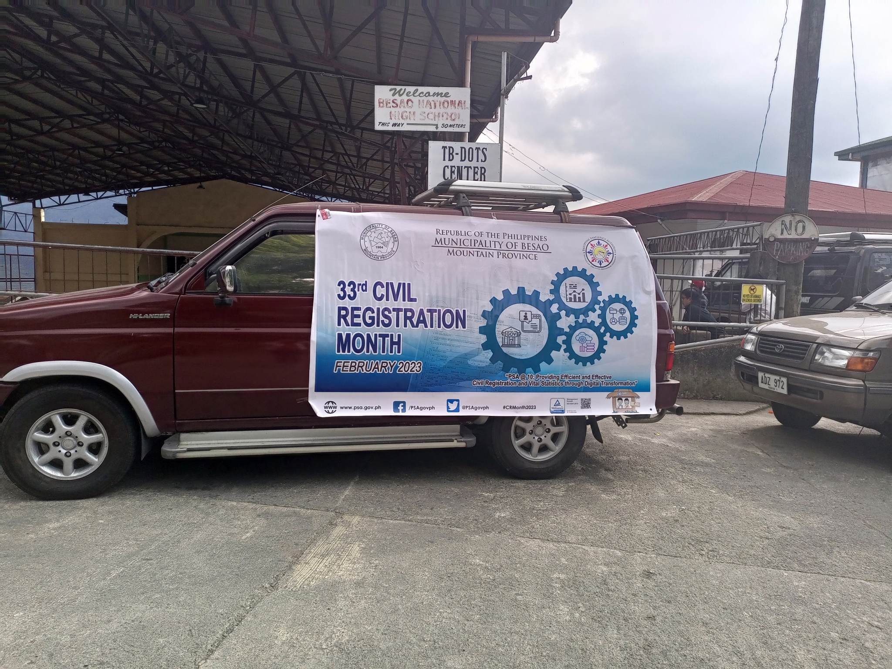
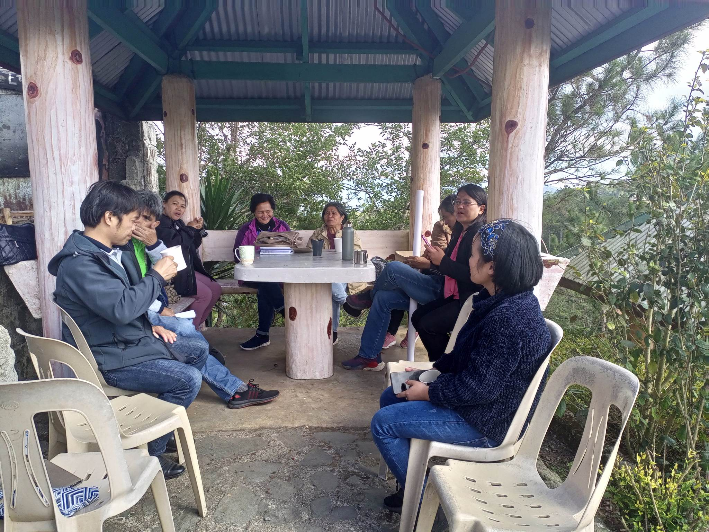
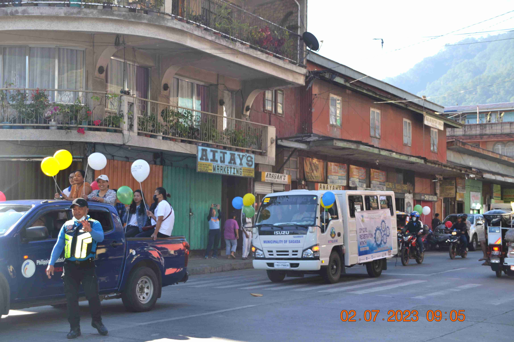
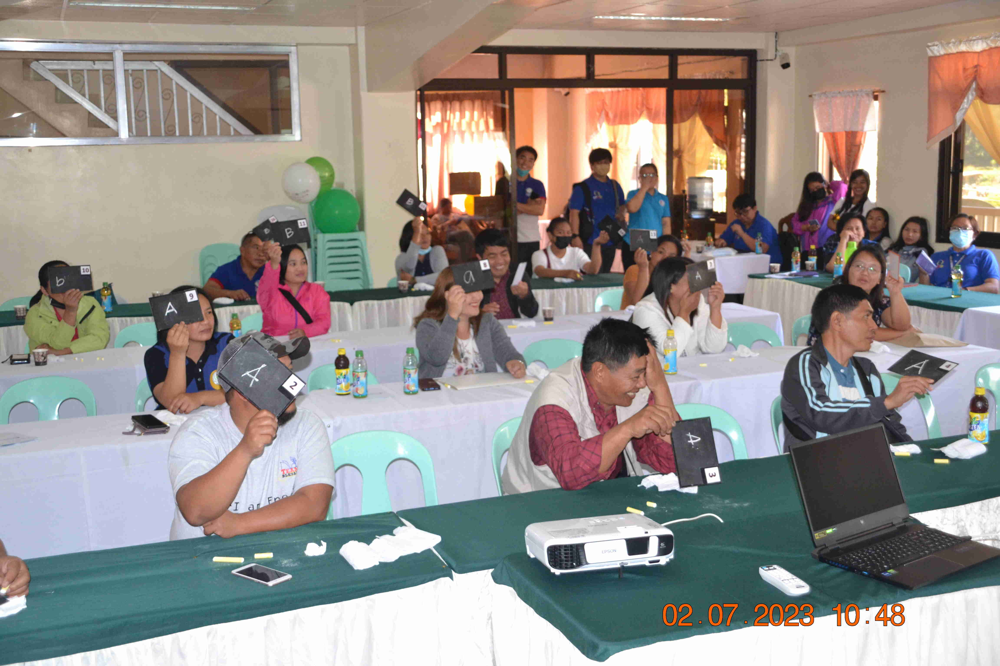
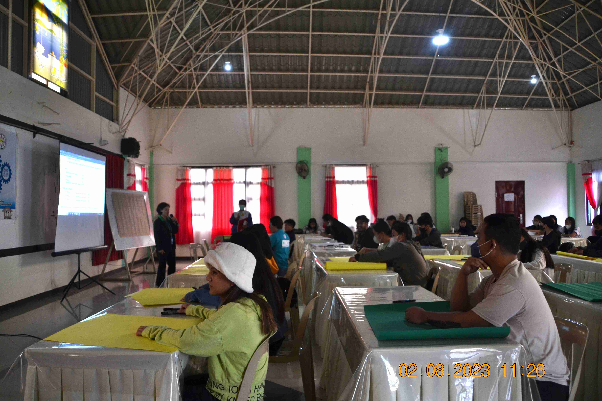
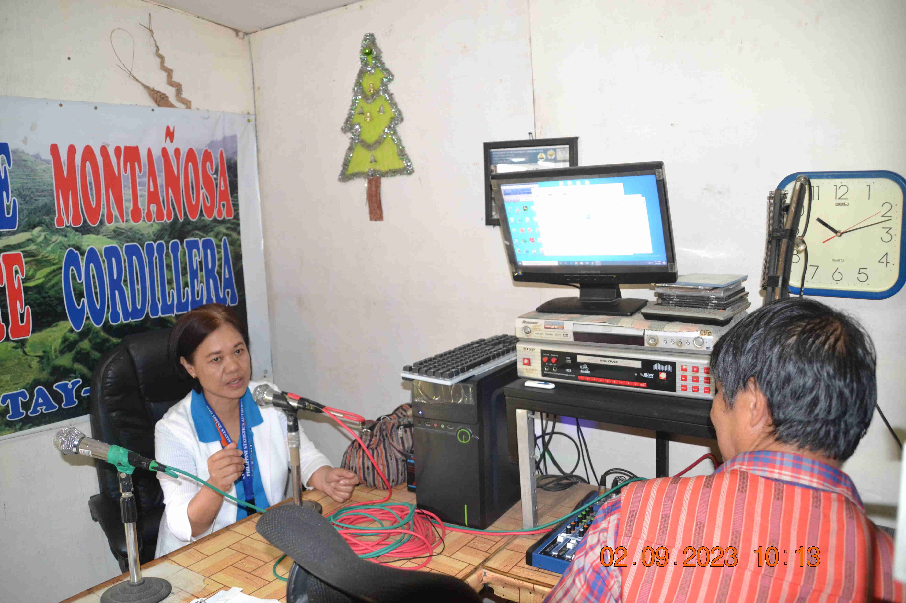
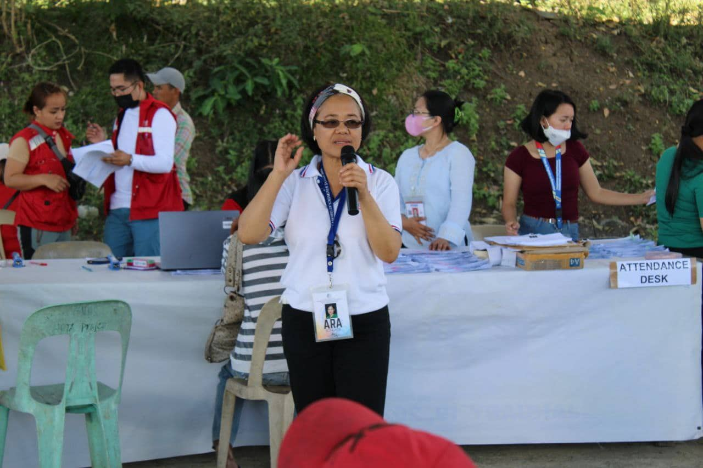

Events on 2023 Civil Registration Month
-

Municipal Hall, Kin-iway, Besao
Motorcade conducted by Municipal Civil Registrar's Office of Besao
Sunset View and Pizza Bar, Poblacion, Sagada
PSA and Municipal Civil Registrars Meeting, Issuance of Memorandum Circulars related to Civil Registration and Vital Statistics Decade
01 February 2023 -

Heritage to Archog Hotel, Samoki, Bontoc
Civil Registration Month Motorcade
Archog Hotel and Restaurant, Bontoc
IEC on Civil Registration and Vital Statistics and Quiz Bee for Municipal Civil Regitrars Officers and Solemnizing Officers
07 February 2023 -

Chico Breeze, Eyeb, Poblacion, Bontoc
Civil Registration Quiz, Poster Making and Slogan Contest for Grade 12 Students of Mountain Province General Comprehensive High School and Saint Vincent High School
08 February 2023 -

Radyo Natin, Caluttit, Bontoc
Radio Interview with Senior Statistical Specialist Ara Bongaoil and Anchor John Pelew on Philippine Identification System and Civil Registration
09 February 2023 -
Municipal Hall, Poblacion, Paracelis
Attended Mass Wedding Conducted by Municipal Local Government Unit of Paracelis at 3PM
14 February 2023 -

Butigue, Paracelis
Registration of Birth and PhilID Registration conducted by Municipal Civil Registrars Office in partnership with PSA
Radyo Pilipinas, Provincial Plaza, Bontoc
Radio Interview with Chief Statistical Specialist Jerry Santos and Anchor Apollo Pada-en on Philippine Identification System and Vital Statistics
15 February 2023